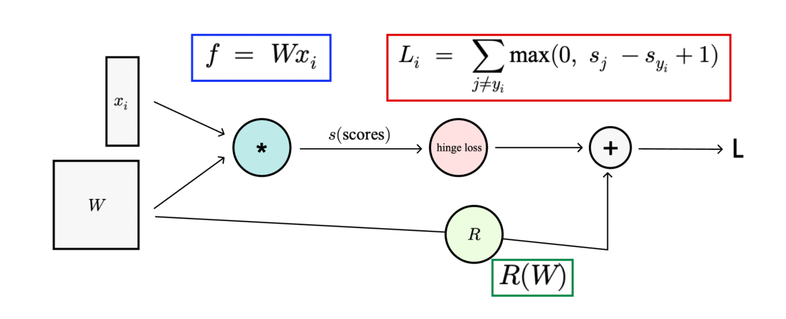
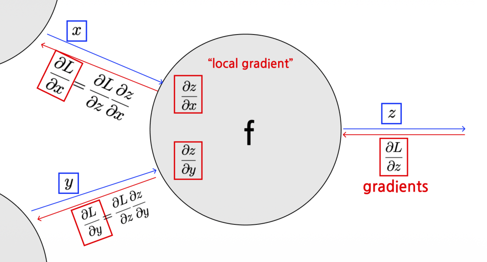
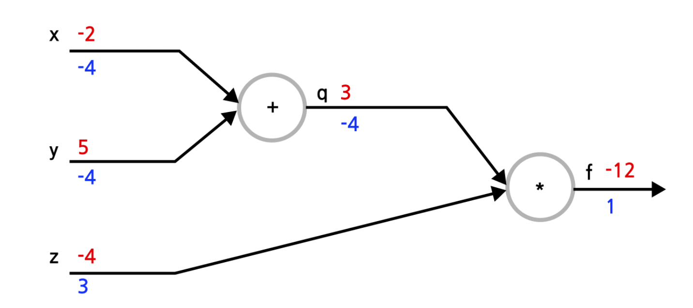
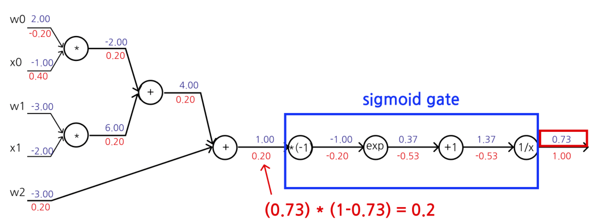
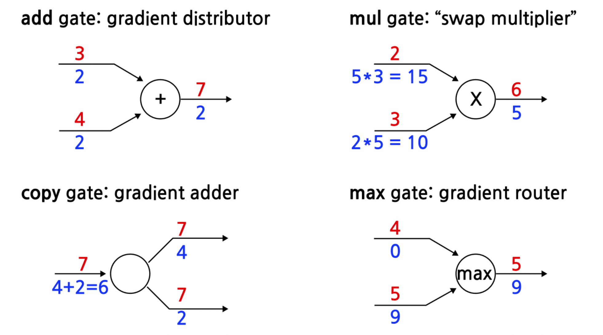
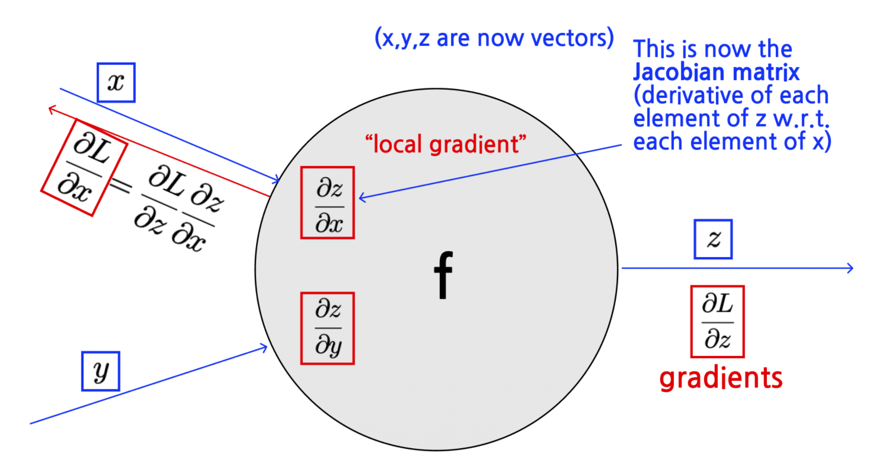

1. Introduction
- 지난 포스트([Lecture 2.3])까지 우리는 이미지 분류를 위한 모델(Score Function)과 모델의 성능을 평가하는 지표(Loss Function)를 정의했다. 이제 우리의 목표는 Loss를 최소화하는 파라미터 \(W\)를 찾는 것이다.
- 이를 위해서는 손실 함수 \(L\)에 대한 각 파라미터의 변화율, 즉 기울기(Gradient, \(\nabla_W L\))를 계산해야 한다. 하지만 딥러닝 모델은 수많은 연산이 중첩된 매우 복잡한 합성 함수 형태를 띤다.
- 이번 포스트에서는 이러한 복잡한 함수의 기울기를 계산 그래프(Computational Graph)와 역전파(Backpropagation) 알고리즘을 이용해 체계적이고 효율적으로 구하는 방법을 알아본다.
2. Computational Graphs
2.1. 정의 (Definition)
- 계산 그래프는 수학적 연산 과정을 표현하는 방향성 비순환 그래프(Directed Acyclic Graph, DAG)이다.
- 노드(Nodes): 입력 데이터, 파라미터, 또는 연산(Operation)을 나타낸다.
- 엣지(Edges): 데이터의 흐름을 나타낸다. 엣지 \((u, v)\)는 노드 \(u\)의 출력값이 노드 \(v\)의 입력으로 사용됨을 의미한다.
- 그래프의 각 노드 \(v\)는 자신의 부모 노드(Predecessors)들의 값을 입력받아 함수 \(f_v\)를 계산한다.
\[ x_v = f_v(\{x_u \mid u \in \text{pred}(v)\}) \]
2.2. Forward Pass
- 계산 그래프를 이용하면 복잡한 수식을 단순한 연산들의 연속으로 분해할 수 있다.
- 예를 들어, 선형 분류기에 Hinge Loss와 Regularization이 결합된 전체 식은 다음과 같이 시각화된다.

- 이 구조 덕분에 우리는 입력부터 출력까지 순차적으로 값을 계산하는 Forward Pass를 명확하게 정의할 수 있다.
3. Backpropagation: Computing Gradients
- 역전파(Backpropagation)는 미분의 연쇄 법칙(Chain Rule)을 이용하여 출력(Loss)에서부터 입력 방향으로 거슬러 올라가며 기울기를 계산하는 알고리즘이다.
3.1. Chain Rule과 Local Gradient
- 어떤 노드 \(f\)가 입력 \(x, y\)를 받아 출력 \(z\)를 내보낸다고 가정하자. 그리고 최종 손실을 \(L\)이라고 하자.

- 우리는 최종 목적지인 \(\frac{\partial L}{\partial x}, \frac{\partial L}{\partial y}\)를 구하고 싶다. 이때 노드 내부와 외부에서 일어나는 일은 다음과 같다.
- Upstream Gradient: 뒤쪽(출력 방향)에서 이미 계산되어 넘어온 기울기 (\(\frac{\partial L}{\partial z}\))
- Local Gradient: 현재 노드의 연산에 대한 미분값 (\(\frac{\partial z}{\partial x}, \frac{\partial z}{\partial y}\))
- Downstream Gradient: Chain Rule에 의해 두 값을 곱하여 앞쪽(입력 방향)으로 전달 (\(\frac{\partial L}{\partial x} = \frac{\partial L}{\partial z} \cdot \frac{\partial z}{\partial x}\))
3.2. Step-by-Step Example
간단한 함수 \(f(x, y, z) = (x + y)z\)를 예로 들어보자. (초기값: \(x=-2, y=5, z=-4\))
- Forward Pass:
- \(q = x + y = -2 + 5 = 3\)
- \(f = q \cdot z = 3 \cdot (-4) = -12\)
- Backward Pass:
- Start: \(\frac{\partial f}{\partial f} = 1\)
- Node (*): \(f = qz\) 이므로
- \(\frac{\partial f}{\partial z} = q = 3\)
- \(\frac{\partial f}{\partial q} = z = -4\)
- Node (+): \(q = x + y\) 이므로
- Local Gradient: \(\frac{\partial q}{\partial x} = 1, \frac{\partial q}{\partial y} = 1\)
- Downstream Gradient (Chain Rule):
- \(\frac{\partial f}{\partial x} = \frac{\partial f}{\partial q} \cdot \frac{\partial q}{\partial x} = -4 \cdot 1 = -4\)
- \(\frac{\partial f}{\partial y} = \frac{\partial f}{\partial q} \cdot \frac{\partial q}{\partial y} = -4 \cdot 1 = -4\)
결과적으로 각 변수에 대한 미분값 \([-4, -4, 3]\)을 얻게 된다.

3.3. Sigmoid Example
- 조금 더 복잡한 Sigmoid 함수 \(\sigma(x) = \frac{1}{1+e^{-x}}\)가 포함된 경우를 보자.
- Sigmoid의 미분은 자기 자신을 이용해 표현할 수 있다는 특징이 있다.
\[ \frac{d\sigma(x)}{dx} = (1 - \sigma(x))\sigma(x) \]
- 이러한 성질을 이용하면, 복잡한 지수 연산 그래프를 하나하나 미분할 필요 없이 Sigmoid Gate 하나로 묶어서 처리할 수 있다.

4. Patterns in Gradient Flow
역전파 과정에서 자주 등장하는 연산 게이트들은 직관적인 “Gradient 흐름 패턴”을 보인다.
- Add Gate (+): Gradient Distributor
- 덧셈은 미분하면 1이 되므로, 상류에서 온 Gradient를 입력 노드들에게 그대로 복사해서 분배한다.
- Mul Gate (*): Swap Multiplier
- \(z = xy\) 미분 시 \(\frac{\partial z}{\partial x}=y\)가 되므로, 상류 Gradient에 상대방의 값을 곱해서 전달한다.
- Max Gate (max): Gradient Router
- Max 연산은 큰 값으로만 흐르므로, Gradient 역시 가장 큰 값을 가졌던 입력으로만 전달되고, 나머지는 0이 된다.

5. Vectorized Backpropagation
- 실제 딥러닝에서는 스칼라(Scalar)가 아닌 벡터(Vector)나 행렬(Matrix) 단위로 연산이 이루어진다. 이 경우에도 기본 원리는 같지만, Jacobian Matrix의 개념이 등장한다.
- 입력 \(x \in \mathbb{R}^n\)와 출력 \(z \in \mathbb{R}^m\)에 대해, 미분은 \(m \times n\) 행렬(Jacobian)이 된다.
\[ \left( \frac{\partial z}{\partial x} \right)_{ij} = \frac{\partial z_i}{\partial x_j} \]
- Example: \(L_2\) Norm 함수 \(f(x, W) = ||Wx||^2\)
- Forward: \(q = Wx\), \(f = ||q||^2\)
- Backward:
- \(\frac{\partial f}{\partial q} = 2q\)
- \(\frac{\partial q}{\partial x} = W\)
- Chain Rule: \(\nabla_x f = 2 W^T q = 2 W^T (Wx)\)
- 벡터 연산에서는 차원(Dimension)을 항상 체크하는 것이 중요하다. Gradient의 차원은 항상 원본 변수의 차원과 같아야 한다.

6. Modular Implementation
- 최신 딥러닝 프레임워크(PyTorch, TensorFlow)는 이러한 계산 그래프를 모듈화하여 구현한다. 각 연산(Layer)은
forward와backward라는 두 가지 메서드를 가진 클래스로 정의된다.
class Multiply(torch.autograd.Function):
@staticmethod
def forward(ctx, x, y):
# Forward pass: 값 계산 및 저장
ctx.save_for_backward(x, y)
z = x * y
return z
@staticmethod
def backward(ctx, grad_z):
# Backward pass: 저장된 값을 꺼내 Gradient 계산
x, y = ctx.saved_tensors
grad_x = y * grad_z # Swap multiplier pattern
grad_y = x * grad_z
return grad_x, grad_y- 이러한 모듈들이 레고 블록처럼 연결되어 거대한 신경망을 구성하며, 사용자는 복잡한 미분 공식을 직접 유도할 필요 없이 그래프를 구성하기만 하면 된다(AutoGrad).